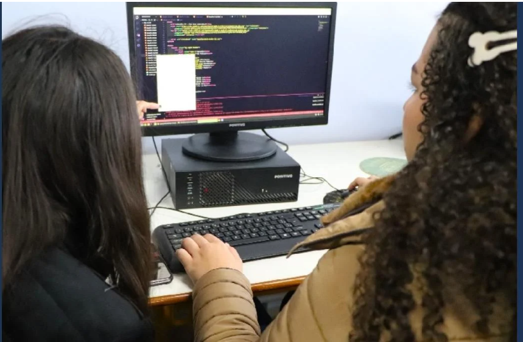
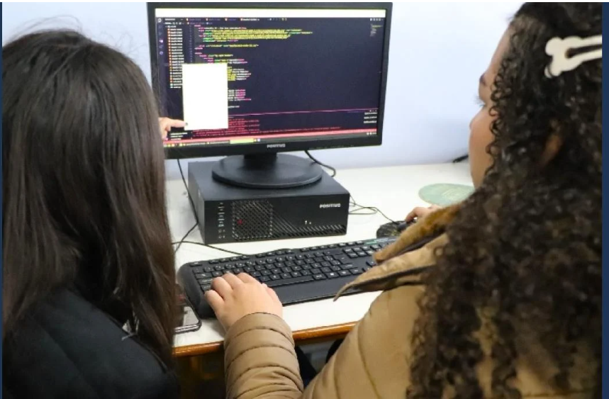

Prof. Robinho
Exercícios realizados durante o curso - Aula prática
Tricolor Oficina Southampton Desafios Aula 5 Teste de Personalidade FilmesAlunos Engajados = Sucesso

 

Javascript!
JavaScript é a linguagem que torna a web dinâmica e interativa. Se você busca
uma
carreira em desenvolvimento
web, dominar essa linguagem é essencial. Por quê?
Versatilidade: JavaScript não se limita ao front-end. Com frameworks como Node.js, você pode
construir
aplicações completas do lado do servidor.
Demanda do mercado: Empresas de todos os portes buscam profissionais com conhecimento em
JavaScript para criar
experiências online mais ricas e engajadoras.
Comunidade ativa: A comunidade JavaScript é vasta e oferece uma infinidade de recursos,
bibliotecas e frameworks
para facilitar o seu aprendizado.
Evolução constante: JavaScript está em constante evolução, com novas funcionalidades e
ferramentas surgindo a
todo momento, garantindo que você sempre tenha algo novo para aprender.
 Salários competitivos: Profissionais com expertise em JavaScript são bem remunerados,
especialmente aqueles que
dominam frameworks modernos como React e Angular.
Criatividade: Com JavaScript, você pode dar vida às suas ideias e criar aplicações
inovadoras,
desde simples
animações até complexos jogos e aplicativos.
Portas abertas: Dominar JavaScript é o primeiro passo para explorar outras áreas da
programação,
como
desenvolvimento mobile e desktop.
Em resumo, aprender JavaScript é um investimento no seu futuro profissional. Se você está
pronto
para se tornar
um desenvolvedor web completo, comece a sua jornada com essa linguagem poderosa e versátil.
Salários competitivos: Profissionais com expertise em JavaScript são bem remunerados,
especialmente aqueles que
dominam frameworks modernos como React e Angular.
Criatividade: Com JavaScript, você pode dar vida às suas ideias e criar aplicações
inovadoras,
desde simples
animações até complexos jogos e aplicativos.
Portas abertas: Dominar JavaScript é o primeiro passo para explorar outras áreas da
programação,
como
desenvolvimento mobile e desktop.
Em resumo, aprender JavaScript é um investimento no seu futuro profissional. Se você está
pronto
para se tornar
um desenvolvedor web completo, comece a sua jornada com essa linguagem poderosa e versátil.
Técnico em T.I
O curso técnico em TI oferece um caminho rápido e eficiente para quem busca uma
carreira promissora no mercado de tecnologia. Com uma carga horária menor que a de um curso
superior, o técnico em TI proporciona uma formação prática e direcionada para as demandas do mercado
de trabalho.
As principais vantagens de optar por um curso técnico em TI são:
Rápida inserção no mercado de trabalho: A alta demanda por profissionais de TI garante uma rápida
empregabilidade aos recém-formados.
Formação prática: A maior parte da carga horária é dedicada a atividades práticas, como
desenvolvimento de sistemas, configuração de redes e manutenção de computadores, preparando o aluno
para os desafios do dia a dia profissional.
Custos menores: Comparado a um curso superior, o
curso técnico em TI costuma ter um custo mais acessível, o que o torna uma opção atraente para
muitos estudantes.
Diversidade de áreas de atuação: O campo da tecnologia da informação é vasto, oferecendo diversas
oportunidades de carreira, desde desenvolvimento de software e redes até segurança da informação e
gestão de projetos.
Possibilidade de continuar os estudos: O técnico em TI pode ser um primeiro passo para quem deseja
seguir uma graduação na área de tecnologia ou em outras áreas relacionadas.
Ao escolher um curso técnico em TI, você estará investindo em seu futuro profissional e abrindo
portas para um mercado de trabalho promissor e em constante crescimento.
o
curso técnico em TI costuma ter um custo mais acessível, o que o torna uma opção atraente para
muitos estudantes.
Diversidade de áreas de atuação: O campo da tecnologia da informação é vasto, oferecendo diversas
oportunidades de carreira, desde desenvolvimento de software e redes até segurança da informação e
gestão de projetos.
Possibilidade de continuar os estudos: O técnico em TI pode ser um primeiro passo para quem deseja
seguir uma graduação na área de tecnologia ou em outras áreas relacionadas.
Ao escolher um curso técnico em TI, você estará investindo em seu futuro profissional e abrindo
portas para um mercado de trabalho promissor e em constante crescimento.